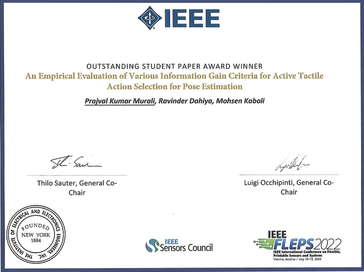
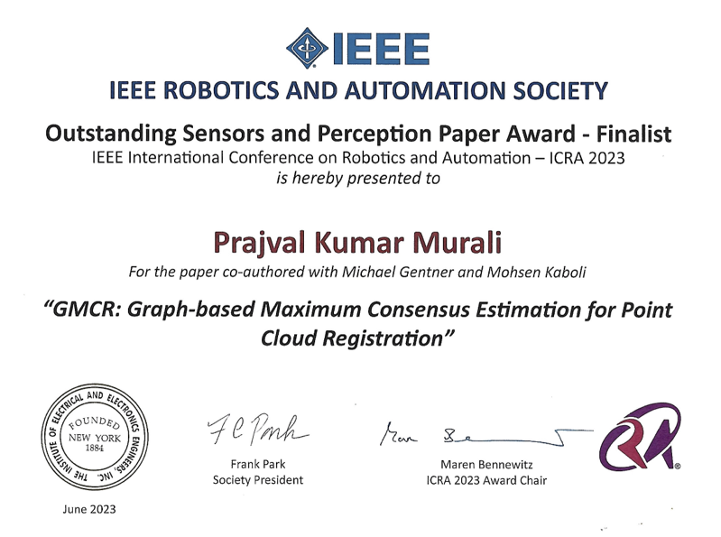
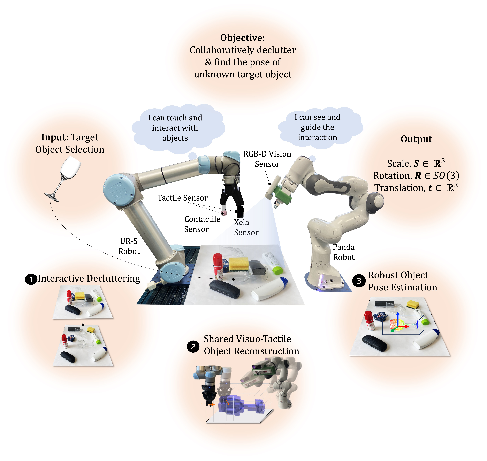
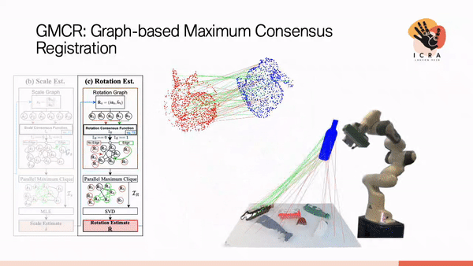
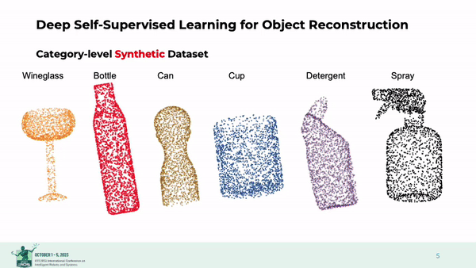
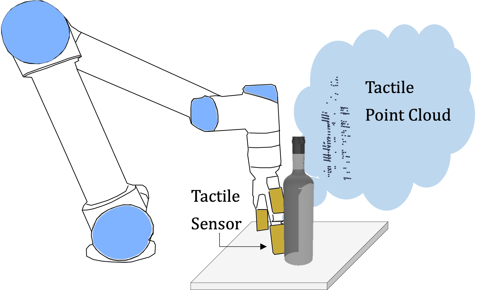
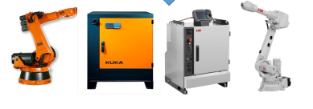

|
I am currently employed as a Research Scientist in corporate research at the Zeiss Group and building multi-modal robotic perception technologies since 2024. Previously, since 2020 I worked at the BMW Group Research towards developing novel algorithms for active multi-modal sensing and perception for autonomous intelligent robots. Herein, I worked towards my doctoral dissertation (Ph.D.) affiliated with the University of Glasgow. I defended my Ph.D. thesis successfully in Dec 2024. I have also worked as a robotics engineer at the Italian Institute of Technology from 2018 to 2020. Here, I worked in a joint lab with Danieli Automation towards robotization of a safety-critical task in the steel industry. I obtained my Master of Science (M.S.) degree with highest distinction in the European Masters on Advanced Robotics (EMARO+), an Erasmus Mundus Master’s program at Ecole Centrale de Nantes, France and University of Genova, Italy. I worked on my M.S. thesis on human-robot collaboration in a manufacturing environment at the Schaeffler Group. I have been awarded the prestigious Erasmus Mundus Consortium Scholarship by the European Union for my master's program. I earned my bachelor's degree (B.Tech.) in engineering with highest distinctions from the National Institute of Technology Tiruchirappalli, India.
I have a strong background with C++/ Python, ROS and ML frameworks (Tensorflow/ PyTorch) and computer vision libraries (PCL, OpenCV). Expertise: Robotics / deep learning / multi-modal perception / point cloud registration / 3D reconstruction / robot-sensor calibration / 3D computer vision / tactile sensing Disclaimer: This is my personal website and opinions presented here are my own and do not reflect the views of my employers.
|

|
Awards |
|  |  |
Active Multi-Modal Pose Estimation |
|  |
Prajval Kumar Murali, Bernd Porr, Mohsen Kaboli International Journal of Robotics Research (IJRR) [paper][video] |
 |
Prajval Kumar Murali, Anirvan Dutta, Michael Gentner, Etienne Burdet, Ravinder Dahiya and Mohsen Kaboli IEEE Robotics and Automation Letters (IEEE RA-L) [paper][video] |
 |
Prajval Kumar Murali, Michael Gentner, and Mohsen Kaboli IEEE/RSJ International Conference on Intelligent Robots and Systems (IROS) 2021 [paper] [video] |
.png) |
Prajval Kumar Murali, Ravinder Dahiya and Mohsen Kaboli The IEEE Int. Conf on Flexible and Printable Sensors and Systems (FLEPS 2022) [paper] Best Paper Award Winner |
|  |
Michael Gentner, Prajval Kumar Murali, and Mohsen Kaboli The IEEE International Conference on Robotics and Automation (ICRA 2023) [paper] Best Paper Award Finalist |
Active Multi-Modal Reconstruction |
|  |
Prajval Kumar Murali, Bernd Porr and Mohsen Kaboli IEEE/RSJ International Conference on Intelligent Robots and Systems (IROS) 2023 [paper] |
Robust Cross-Modal Perception |
 |
Prajval Kumar Murali, Cong Wang, Dongheui Lee, Ravinder Dahiya and Mohsen Kaboli IEEE Robotics and Automation Letters (IEEE RA-L) [paper] |
|  |
Prajval Kumar Murali , Cong Wang, Ravinder Dahiya and Mohsen Kaboli The IEEE Int. Conf on Flexible and Printable Sensors and Systems (FLEPS 2022) [paper] |
Human-Robot/ Human-Vehicle Collaboration |
 |
Prajval Kumar Murali , Mohsen Kaboli, and Ravinder Dahiya Advanced Intelligent Systems [paper] |
 |
Prajval Kumar Murali, Kourosh Darvish, Fulvio Mastrogiovanni Springer Journal of Intelligent Service Robotics (JIST) [paper][video][code] |
|  |
Angelo Rendiniello, Alberto Remus, Ines Sorrentino, Prajval Kumar Murali , Daniele Pucci, Marco Maggiali, Lorenzo Natale, Enrico Villagrossi, Andrea Polo, Alessandro Ardesi, Silvio Traversaro IEEE International Conference on Emerging Technologies and Factory Automation, ETFA 2020 [paper] |
Multi-Modal Sensor Calibration |
 |
Prajval Kumar Murali, Ines Sorrentino, Angelo Rendiniello, Claudio Fantacci, Enrico Villagrossi, Andrea Polo, Alessandro Ardesi, Marco Maggiali, Lorenzo Natale, Daniele Pucci, Silvio Traversaro IEEE International Conference on Robotics and Automation, ICRA 2021 [paper] |
 |
Benjamin Navarro, Prajval Kumar Murali , Aicha Fonte, Philippe Fraisse, Gérard Poisson, Andrea Cherubini IEEE/RSJ Intelligent RObots and Systems IROS 2015, Workshop on Multimodal sensor-based robot control for HRI and soft manipulation [paper][video] |
|
Website by the courtesy of Jon Barron. |